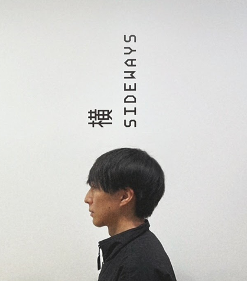

私という存在

存在
FRYX
a.k.a Takumi Furuya
CG Designer | Photographer | Creator
「仮想世界に、現実以上のリアリティを。
記憶に残る美しい世界を。
まだ誰も見たことのない世界を、その手で創造する。」
CGやAI、写真や映像など多角的な表現を追求し
「クリエイティブの相乗効果」を生み出す試みを発信しています。
創造の軌跡
2024 - 現在
リードデザイナーとして従事中
2022 - 2024
リグチームリーダーとしてチームマネジメントを経験
2019 - 2022
リガーへ転身
2016 - 2019
CGデザイナーとしてキャリアをスタート
接触の可能性
すべての出会いは偶然であり、必然である。
あなたとの接触が、新たな創造の始まりとなることを願う。